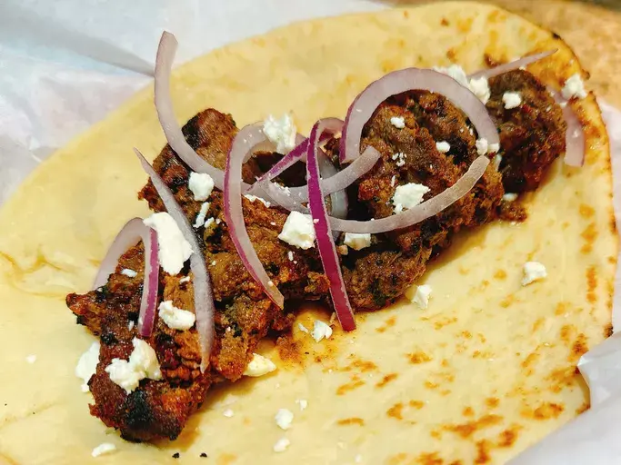

Bihari Kabab

Description:
Bihari Kebab is a tender and flavorful South Asian dish that traces its roots to the Bihar region of India and is especially popular in Pakistan. It is usually made with thin strips of beef or chicken, marinated in yogurt, mustard oil, and a blend of spices like ginger, garlic, cumin, and chili. A touch of raw papaya paste is often added to naturally soften the meat, giving it a unique melt-in-the-mouth texture. The kebabs are traditionally grilled over charcoal, which adds a smoky aroma and enhances the spices. Served hot with naan, paratha, or fresh chutney, Bihari Kebab is loved for its rich taste and soft, juicy bite that makes it stand out from other kebabs.
Ingredients
Kababs:
- 1 1/4 pounds beef tenderloin, sliced into 1/4-inch-thick strips, about 1-1/2 X 6 inches
- 1/4 cup avocado oil
- 1/2 onion, thinly sliced
- 1 kiwi, peeled and quartered
- 1 1/2 tablespoons gram flour
- 1/2 tablespoon poppy seeds
- 1 tablespoon garlic paste
- 1 tablespoon ginger paste
- 1 small serrano chile pepper
- 1/4 cup mustard oil
- 2 tablespoons white vinegar
- 1/4 cup plain full fat yogurt
Whole Spices:
- 1/2 whole nutmeg seed
- 1 tablespoon whole mace
- 5 star anise pods
- 5 whole dried red Kashmiri chilies
Ground Spices:
- 1 teaspoon chili powder
- 1 teaspoon ground cumin
- 1 teaspoon garam masala
- 1 teaspoon freshly ground black pepper
- 1 teaspoon salt
Steps:
- Pound beef strips thin; set aside.
- Fry onions in avocado oil until deep brown, about 5 min. Remove and set aside.
- Peel and quarter kiwi; set aside.
- Dry-roast gram flour, poppy seeds, then spices (nutmeg, mace, star anise, Kashmiri chilies), grinding spices to a coarse powder.
- Blend onions, kiwi, ginger paste, garlic paste, and serrano chile to a paste. Add mustard oil, vinegar, and yogurt; blend smooth.
- Add roasted seeds, flour, ground spices, chili powder, cumin, garam masala, pepper, and salt; process into marinade.
- Coat beef with marinade in a sealed bag; refrigerate 6 hrs or overnight.
- Thread beef onto skewers; keep leftover marinade for basting.
- Preheat grill to 500°F (260°C), oil grate. Grill 5 min per side.
- Lower to 350°F (175°C), cover, and cook 10 min. Turn, baste, and cook 10 min more, until meat reaches 170°F (77°C). Brush with oil if dry.
- Serve hot with naan, onions, tamarind chutney, and green chutney.